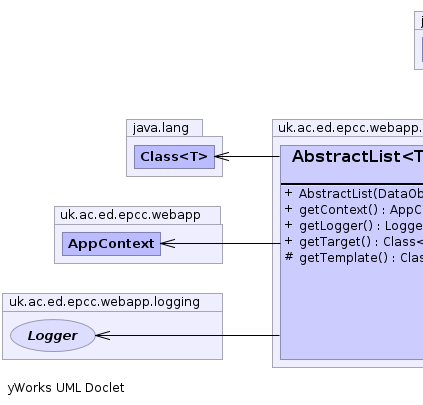
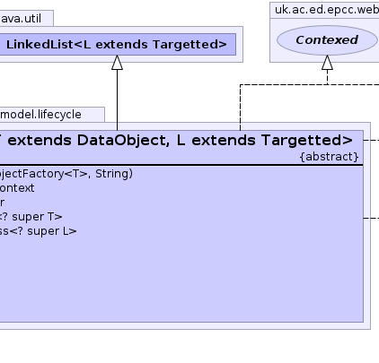
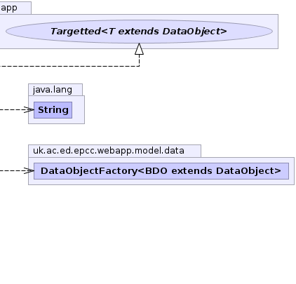

public abstract class AbstractList<T extends DataObject,L extends Targetted> extends java.util.LinkedList<L> implements Contexed, Targetted<T>
LinkedList of Targetted objects that is populated
from configuration parameters.
The aim is to remove unecessary code dependencies
This looks in the parameter tag.list-name where
tag is the configuration tag for the parent factory.
This value is interpreted as a comma separated list of class tags and used to create the
listeners. The target classes for the listeners and the factory are checked for type conflicts.|  |  |  |
| Constructor and Description |
|---|
AbstractList(DataObjectFactory<T> factory,
java.lang.String list_name) |
| Modifier and Type | Method and Description |
|---|---|
AppContext |
getContext() |
Logger |
getLogger() |
java.lang.Class<? super T> |
getTarget()
Get the type of the returned object as far as it is known.
|
protected abstract java.lang.Class<? super L> |
getTemplate() |
add, add, addAll, addAll, addFirst, addLast, clear, clone, contains, descendingIterator, element, get, getFirst, getLast, indexOf, lastIndexOf, listIterator, offer, offerFirst, offerLast, peek, peekFirst, peekLast, poll, pollFirst, pollLast, pop, push, remove, remove, remove, removeFirst, removeFirstOccurrence, removeLast, removeLastOccurrence, set, size, toArray, toArrayequals, hashCode, listIterator, removeRange, subListcontainsAll, isEmpty, removeAll, retainAll, toStringfinalize, getClass, notify, notifyAll, wait, wait, waitpublic AbstractList(DataObjectFactory<T> factory, java.lang.String list_name)
protected abstract java.lang.Class<? super L> getTemplate()
public AppContext getContext()
getContext in interface Contexedpublic Logger getLogger()
public final java.lang.Class<? super T> getTarget()
TargettedgetTarget in interface Targetted<T extends DataObject>